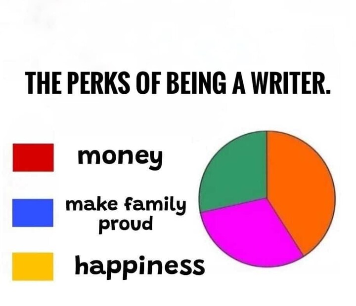
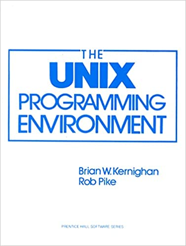
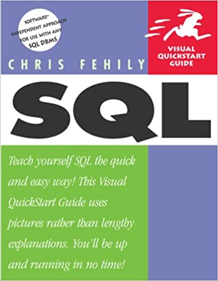
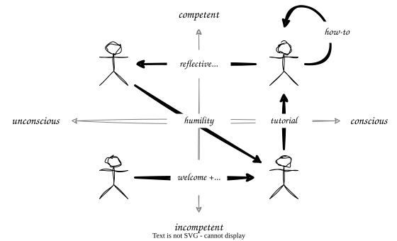
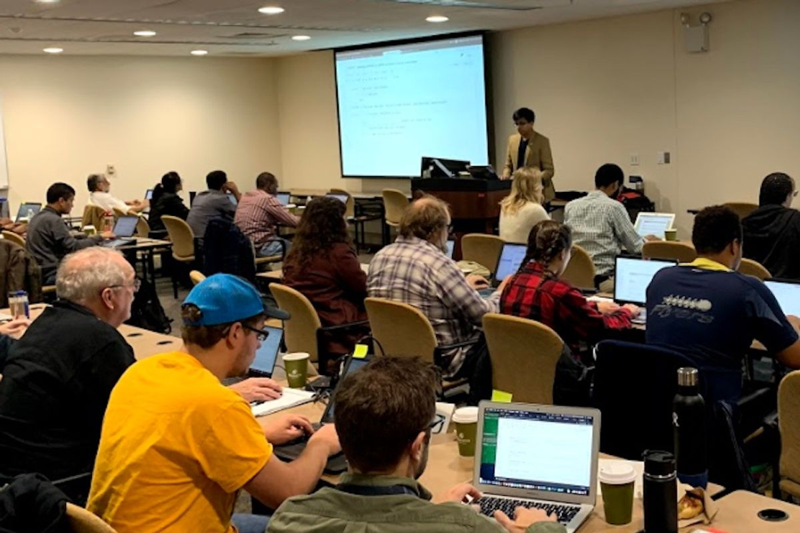
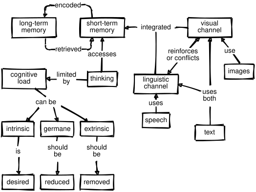

Writing a Technical Book
2024-10-18
Why Should You Listen to Me?
- Author of five technical books (and two for children)
- Co-author of three more
- Editor of six (some of which won awards)
- Have worked with six publishers
- I’ve made mistakes so you don’t have to


Don’t Write a Book
- It’s a big undertaking, and it’s easy to get discouraged
- Instead, start blogging regularly
- Aim for one thousand-word article per week
- If you can’t do this, you probably won’t finish your book
- Don’t try to write posts in book order
- Blog will help you figure that out
Don’t Write a Book

Don’t Expect to Make a Profit
- You’ll get anything from 12% to 50% royalties from a publisher
- Higher percentage if you self-publish…
- …but 100% of nothing is nothing
- Assume a sale price of $50 and sales of a thousand copies, you’ll make about $10K
- It’ll take (at least) a few hundred hours to write the book
- You’re almost certainly better off doing contract coding
- Or flipping burgers
So Why Bother Writing?
- To build your reputation
- To give back to the community
- Because you enjoy writing
Read, Then Write
- Re-read your two favorite technical books
- Make notes about what their authors did well
- Ordering, examples, tone, exercises, …
- This will give you some ideas for your own book
- And help you become more conscious of your writing


Don’t Try to Be Funny
- Few jokes are funny the second time
- Fewer can stand a third re-telling
- Unless they’re very, very dry
- And please don’t use exclamation marks!
- It won’t be a surprise the second time around!
- And you should let the reader decide if it’s exciting!!
Avoid Banal Advice
- “You should carefully consider users’ needs”
- Would anyone recommend the opposite?
- Don’t tell me what to think about: tell me what to think
- Checklists are useful
- But belong in appendices or online
Create Learner Personas
- A short description of a specific (fictional) individual
- Create at most two
- A book that’s meant for everyone is useful to no-one
Jess started writing VB macros for Excel in a startup and never looked back. After spending three years doing front-end JavaScript they now want to learn how to build back-end applications, but feel insecure about never having studied computer science. This material will flesh out their understanding of callbacks, classes, and data structures, and teach them some common design patterns.
Three Kinds of Learners
- Novice: trying to build a mental model
- Competent practitioner: wants to fill in gaps in knowledge
- Expert: wants high-level discussion of tradeoffs and alternatives
No book can serve more than one group well.
Three Kinds of Learners

Don’t Write to Cover Your Ass
- Dozens of books start with a short intro to XYZ
- None of these are useful
- If your audience knows Python, they don’t need a short intro
- If they don’t, one chapter won’t help
- Authors include these so they can pretend their book is accessible to a wider audience
- Please don’t do this
Don’t Compete With the Web
- Reference manuals were invaluable forty years ago
- But the world’s knowledge is now just a click away
- You add value by explaining how rather than recapitulating what
- And by creating a narrative
Check Your Facts
- It doesn’t matter how well you know your chosen subject
- Something will have changed since the last time you looked
- Even if it hasn’t, it will in the year it takes you to write your book
- Stack Overflow
iswas a great resource- What questions do people actually have?
- What answers do they actually find useful?
Don’t Write a General Introduction
- Unless you’re one of the first three to market
- Focus on a particular aspect: Python for Web Scraping
- Or a particular audience: R for Sports
- Potential audience is smaller…
- …but you’ll reach a much higher fraction…
- …and a focused book is much easier to write
Publishers
- Every publisher has a standard proposal form
- Who’s the audience?
- Why are you the right person to write this?
- What’s the competition and how will you compete?
- They strongly prefer that you talk to one at a time
- They need content as much as you need a publisher
- If no reputable publisher wants your book, maybe you should think about writing something else
Self-Publication
Agents
- Unnecessary for technical books
- Nearly essential for fiction
- Reputable ones are almost always fully booked
- A good reason to go to conventions…
Licensing
- My last few books have been CC-BY-NC
- You can use it but not (re-)sell it without permission
- I maintain the HTML version online
- Great for errata and incremental improvements
- Taylor & Francis has exclusive rights to print and e-book (including PDF)
- Your mileage will vary
Try It Out
- No lesson survives first contact with learners
- So teach your material while it is in draft
- At a conference
- For a local college or bootcamp
- Online
- If no one signs up, you just learned something useful…

Plan to Iterate
- No point trying material out unless you act on what you learn
- Expect to rewrite some pieces two or three times
- Often as a result of reorganization
- If you can’t decide whether X comes before Y or vice versa, the odds are that Z has to come before either of them
Drywall, then Paint
- Get the words and code down
- Then worry about diagrams, citations, glossary, etc.
- Many of these will disappear during editing
- There’s no point polishing something readers don’t ever see
Sketch First
- Draw diagrams on paper or a whiteboard
- Faster and more flexible than any computer drawing tool
- Although fingertip apps for tablets are improving quickly
- Take a picture and use as a placeholder until you’re sure
- Because you’re going to iterate a lot on diagram

All Authoring Tools Suck
- Word/Google Docs show you what you’re writing…
- …but don’t play nicely with version control
- Markdown/LaTeX/notebooks work well with version control…
- …but you have to debug your document
- I’ve built pipelines for every single book I’ve worked on
You Need At Least Two Friends
- Many people will do cursory reviews or one careful read
- You need people who will read half a dozen sets of changes
- Thank them in the book
Trust Your Editor and Reviewers
- It doesn’t matter if it makes sense to you
- It only matters if it makes sense to them
- So please accept the input of others
“An author’s job is to produce the manure in which an editor grows something worth reading.”
— Tom Wilkie
Automate, but Proofread
- The author’s equivalent of “trust, but verify”
- I can re-run all of the examples in my latest book with a single command and capture their output and insert that output in the manuscript…
- …but I still have to re-read the discussion around those examples to make sure it hasn’t fallen out of sync
- This is where I
expecthope generative AI will have the biggest short-term impact
It’s OK to Stop
- I’ve started more books than I’ve finished
- The more I wrote, the less I believed they would help their intended audience
- I’ve also set books aside for a couple of years and then come back to them
- This isn’t the same as giving up
Stop and Ship
- Your book will never be perfect
- It will probably never even feel finished
- Any more than software does
- Ship it anyway
Celebrate
- You’ll spot a typo within seconds of receiving the first printed copy
- Someone you’ve never met will say something uncomplimentary in a review online
- Chapter 9 will never be as good as you wanted it to be
- To hell with that: be proud of what you built and of who you helped by building it
Thank You

start where you are · use what you have · help who you can